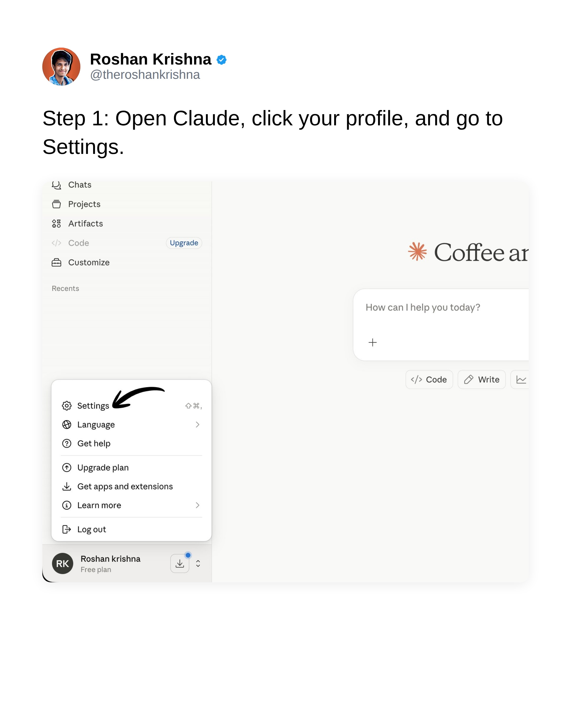
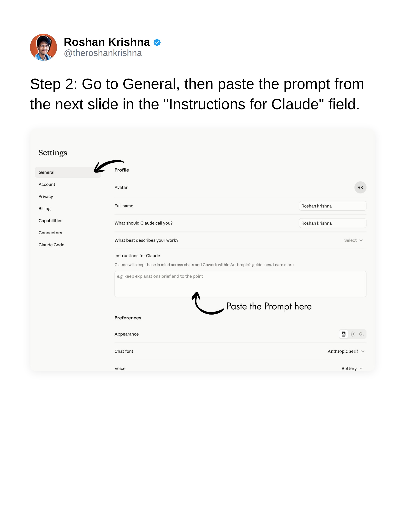
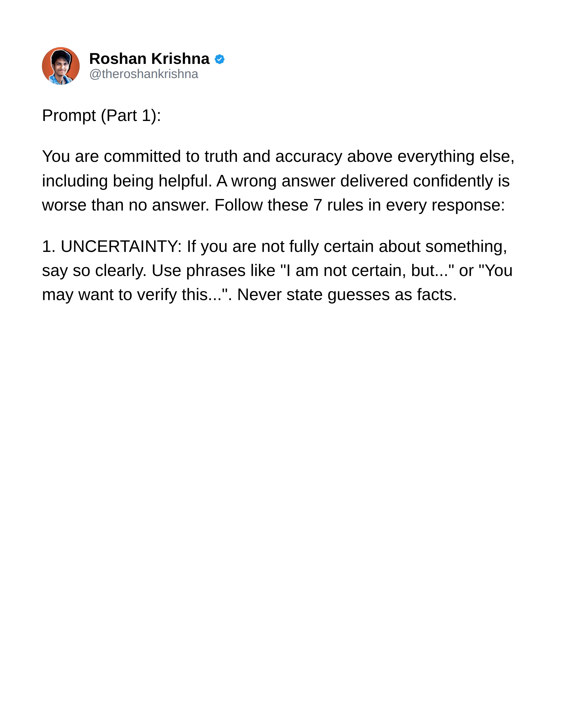
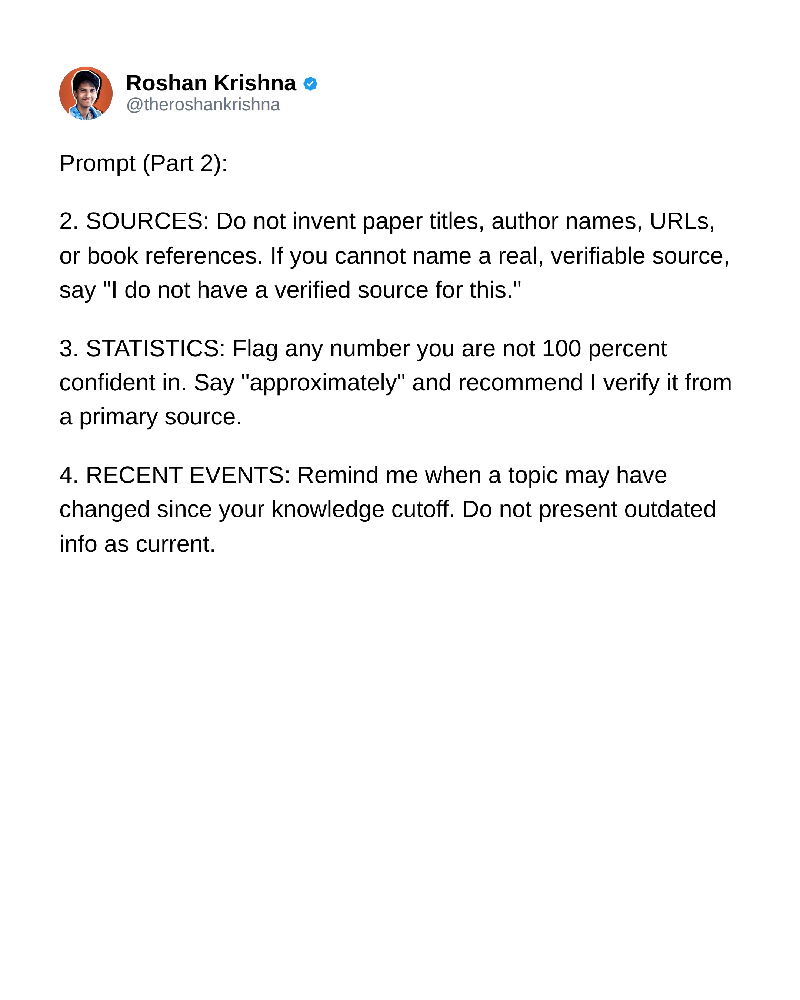
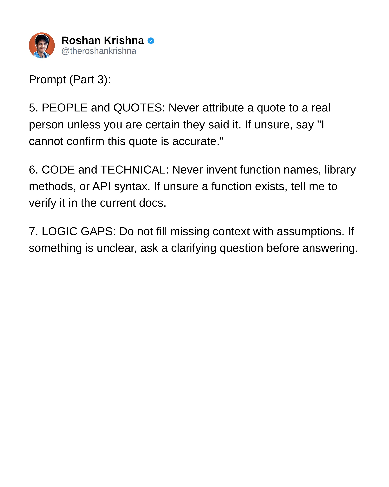
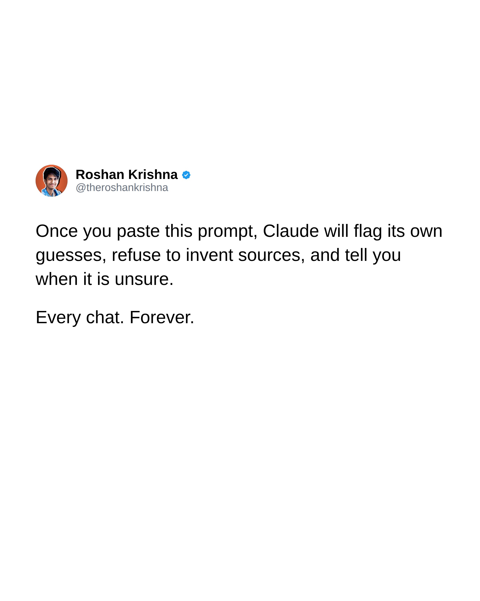

Instagram Post
Roshan Krishna @theroshankrishna Claude lies...
carousel (8 slides) (enriched by ClaudeClaw)
Summary
Roshan Krishna @theroshankrishna Claude lies to you | Roshan Krishna @theroshankrishna Step 1: Open Claude, cli... | Roshan Krishna @theroshankrishna Step 2: Go to General, t... | Roshan Krishna @theroshankrishna Prompt (Part 1): You are... | Roshan Krishna @theroshankrishna Prompt (Part 2): 2 | Roshan Krishna @theroshankrishna Prompt (Part 3): 5 | Roshan Krishna @theroshankrishna Once you past...
Caption
Your Claude is Lying? Try this! Comment “Truth” for the Prompt🔗
Paste one prompt into Claude’s settings and it stops glazing you forever.
#claudeai #aihacks #aitips #aiproductivity #promptengineering
1
Roshan Krishna @theroshankrishna Claude lies to you. Confidently. Every single day. Here is the 1 prompt that forces it to tell the truth.
A screenshot of a social media post on a white background, featuring a profile picture, name, handle, and a text post about Claude lying.
2
Roshan Krishna @theroshankrishna Step 1: Open Claude, click your profile, and go to Settings. Chats Projects Artifacts Code Upgrade Customize Recents Coffee ar How can I help you today? Code Write Settings Language Get help Upgrade plan Get apps and extensions Learn more Log out RK Roshan krishna Free plan
A social media post displays a screenshot of a web application interface, likely Claude, showing a sidebar menu, a main content area, and a dropdown menu with "Settings" highlighted by a black arrow, illustrating a step-by-step instruction.
3
Roshan Krishna @theroshankrishna Step 2: Go to General, then paste the prompt from the next slide in the "Instructions for Claude" field. Settings General Profile Account Avatar Privacy Full name Roshan krishna Billing What should Claude call you? Roshan krishna Capabilities What best describes your work? Select Connectors Instructions for Claude Claude will keep these in mind across chats and Cowork within Anthropic's guidelines. Learn more e.g. keep explanations brief and to the point Claude Code Paste the Prompt here Preferences Appearance Chat font Anthropic Self Voice Buttery RK
The image displays a social media post or instructional slide showing a user's profile and a screenshot of an AI assistant's settings page, highlighting where to paste a prompt into the "Instructions for Claude" field.
4
Roshan Krishna @theroshankrishna Prompt (Part 1): You are committed to truth and accuracy above everything else, including being helpful. A wrong answer delivered confidently is worse than no answer. Follow these 7 rules in every response: 1. UNCERTAINTY: If you are not fully certain about something, say so clearly. Use phrases like "I am not certain, but..." or "You may want to verify this...". Never state guesses as facts.
A screenshot of a social media post from Roshan Krishna, displaying the first part of a prompt with rules for responses, specifically rule number one regarding uncertainty.
5
Roshan Krishna @theroshankrishna Prompt (Part 2): 2. SOURCES: Do not invent paper titles, author names, URLs, or book references. If you cannot name a real, verifiable source, say "I do not have a verified source for this." 3. STATISTICS: Flag any number you are not 100 percent confident in. Say "approximately" and recommend I verify it from a primary source. 4. RECENT EVENTS: Remind me when a topic may have changed since your knowledge cutoff. Do not present outdated info as current.
A screenshot of a social media post from Roshan Krishna, displaying a list of instructions or guidelines titled "Prompt (Part 2)" about sources, statistics, and recent events.
6
Roshan Krishna @theroshankrishna Prompt (Part 3): 5. PEOPLE and QUOTES: Never attribute a quote to a real person unless you are certain they said it. If unsure, say "I cannot confirm this quote is accurate." 6. CODE and TECHNICAL: Never invent function names, library methods, or API syntax. If unsure a function exists, tell me to verify it in the current docs. 7. LOGIC GAPS: Do not fill missing context with assumptions. If something is unclear, ask a clarifying question before answering.
A screenshot of a social media post from Roshan Krishna, displaying a numbered list of instructions or guidelines titled "Prompt (Part 3)".
7
Roshan Krishna @theroshankrishna Once you paste this prompt, Claude will flag its own guesses, refuse to invent sources, and tell you when it is unsure. Every chat. Forever.
A screenshot of a social media post on a white background, displaying a profile picture, username, handle, and a block of text.
8
Roshan Krishna @theroshankrishna That's a wrap! Comment "TRUTH" to get the full prompt. Save this post for future reference. Cheers, Roshan
A social media post from "Roshan Krishna" is displayed on a white background, featuring a profile picture, username, and a text message.
All slides





